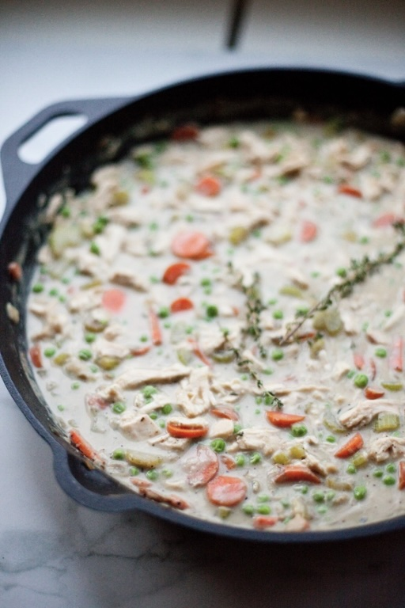

Resume
Wordle
Video
Tableau
Cooking With Dietary Restrictions
Dietary Restrictions
Gluten-Free
Lactose Intolerant
Nut Allergy
Shellfish Allergy
Kosher
Diabetic
Things to Keep in Mind
Communication
ask about preference and allergies, distinguishing them before cooking
Cross-Contamination
use seperate cooking utensils and cookware for allergens
Hidden Ingredients
read labels closely to check against dietary needs
Design for Flexibility
create dishes with a shared base and different toppings
Label Everything
clearly label dishes so guests know what is safe to eat
My Favorite Recipes
Creamy Chicken Pot Pie Soup
Black Bean Mango Quinoa Salad
Chicken Tostada

Creamy Chicken Pot Pie Soup